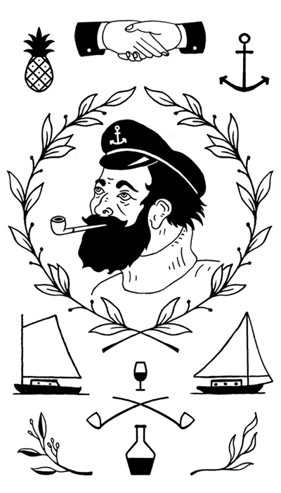

I have been tattooing since 2014, all tattoos are done using traditional hand poking techniques. My work is generally inspired by New England and Atlantic Canadian maritime folk art. While historically tattoos were prevalent among sailors of the region, little primary evidence remains. So instead I look to scrimshaw, engravings, etchings, furniture, needlework, architecture, and paintings.
